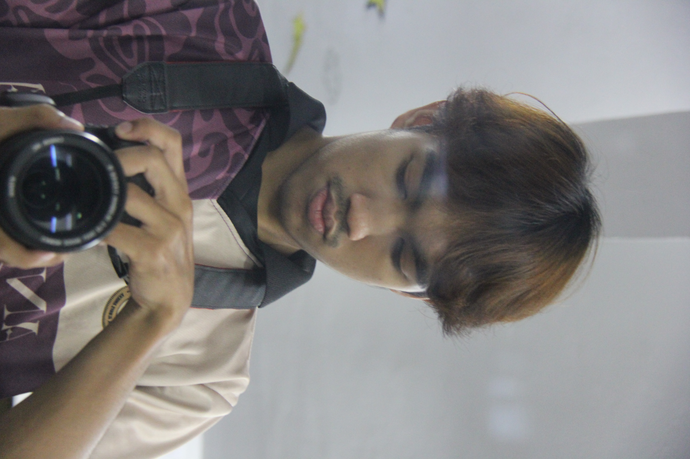
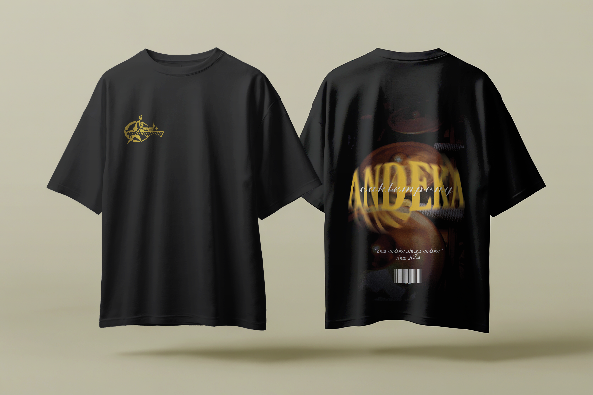
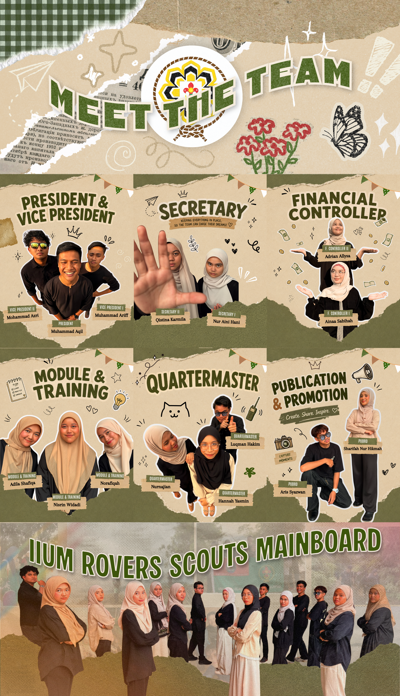

Concept Art
Brand
Graphic designer // visual storyteller
I’m Aris Syazwan, a graphic designer crafting premium visual identities, motorsport-inspired concepts, and modern brand experiences that feel elevated, memorable, and intentional.

A mix of bold branding, visual experimentation, and polished campaign design shaped for attention and clarity.


Strategic design systems built to look elevated, feel intentional, and convert attention into action.
Logo systems, positioning, type direction, and visual language that help brands feel distinct from the first glance.
Social layouts, event visuals, and digital art direction designed for attention in crowded, fast-moving spaces.
Print-ready visuals and product packaging crafted with tactile detail, rhythm, and a premium brand feel.

About
I’m a multidisciplinary designer focused on visual systems, art direction, and brand storytelling for ideas that want to feel bold, premium, and unmistakably original. My work blends editorial clarity with strong creative direction so each piece feels both intentional and memorable.
From identity work and campaign visuals to concept-driven art, I build design around story, rhythm, and impact—so the final result doesn’t just look refined, but also communicates with purpose.
Available for selective collaborations and brand-led design projects.